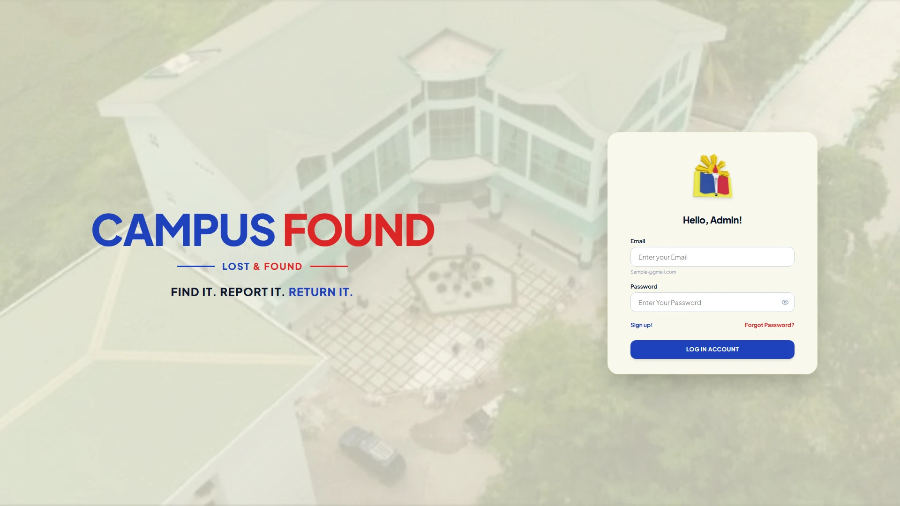
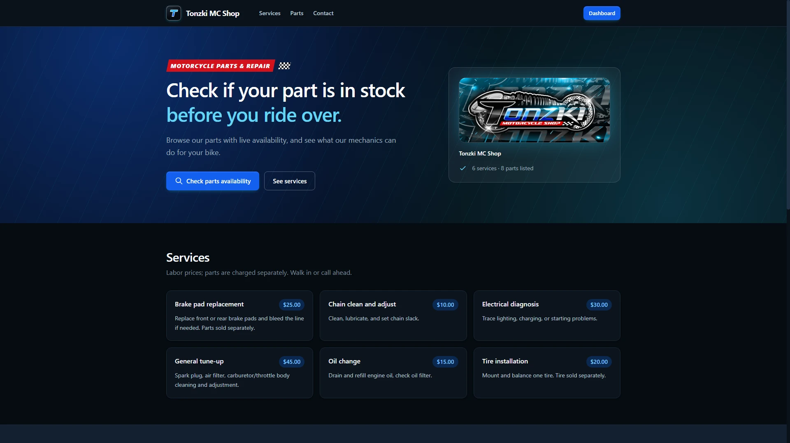
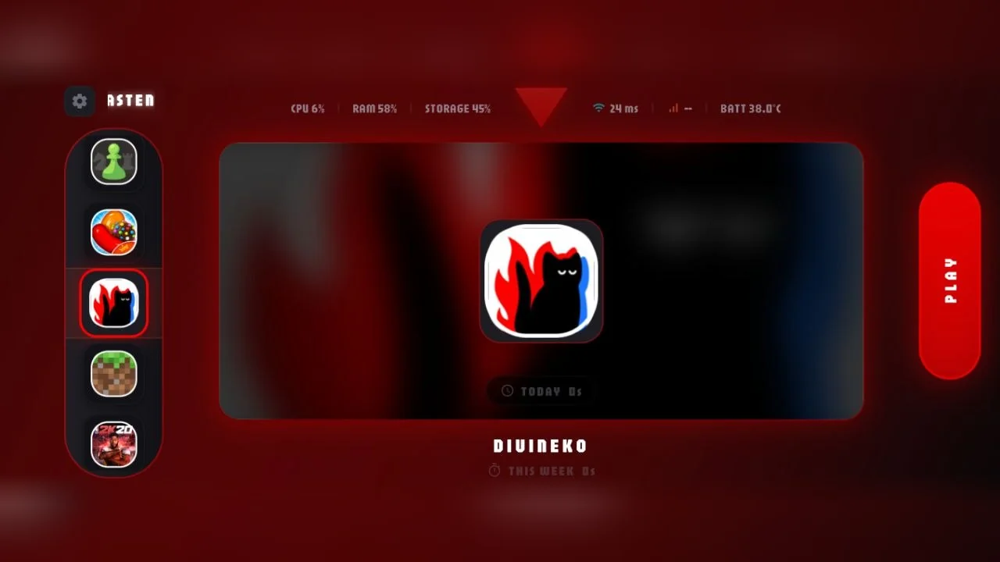

01 · 2026 · School project
Campus Found
A lost-and-found system for our campus. Students can report items they lost or found, and admins manage the reports so items make their way back to their owners.
Laravel · Supabase · Flutter
Available for opportunities
Justin Jay Vitales — BSIT student & full-stack developer. I build with AI to deliver enhancements and solve real problems.
Laravel • Flutter • Supabase • Tailwind
01—03

01 · 2026 · School project
A lost-and-found system for our campus. Students can report items they lost or found, and admins manage the reports so items make their way back to their owners.
Laravel · Supabase · Flutter

02 · 2026 · Client project
Laravel · Supabase · TypeScript

03 · 2025 · School & client project
Flutter · Dart · Firebase